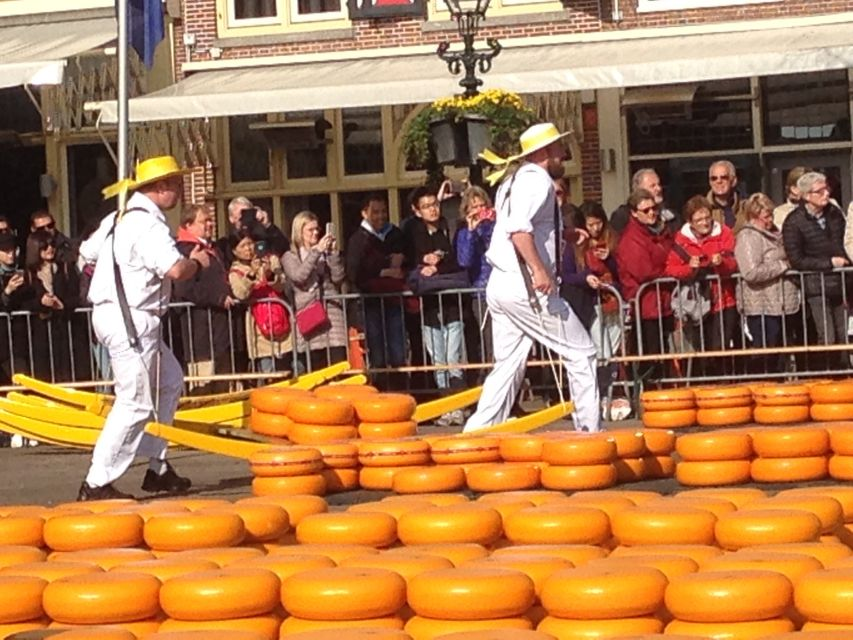
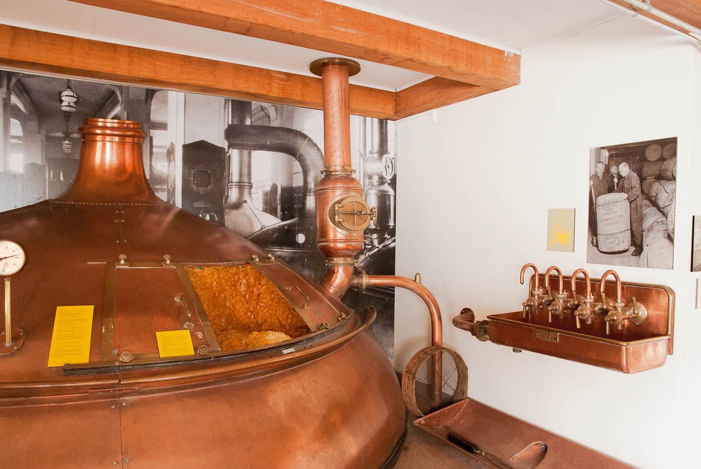

Wist U dat Oterleek:
 In 1365 bezit de stad één kaasweegschaal, in 1612 zijn het er al vier. De oprichtingsdatum van het kaasdragersgilde is 17 juni 1593. De markt heeft altijd op het Waagplein plaatsgevonden. Dit plein is verschillende malen vergroot. In twee eeuwen tijd werd het maar liefst acht keer vergroot tot de huidige oppervlakte. Hieruit blijkt het grote belang van de kaashandel voor de stad. In de 17 eeuw werd kaas op vrijdag en zaterdag verhandeld vanaf mei tot Allerheiligen. In de 18e eeuw zelfs vier dagen per week.
 Bier is al een paar duizend jaar de populairste alcoholhoudende drank in onze streken. Maar hoe wordt het gebrouwen? Wat is mouten en waarom is gist zo belangrijk? Nationaal Biermuseum De Boom vertelt het u allemaal aan de hand van gereedschappen, apparatuur en machines waarmee de afgelopen tweehonderd jaar “het gouden nat” werd gebrouwen. Onze video's, films en QR-codes geven u een indruk van brouwen toen en nu. Antieke vervoermiddelen als een handkar en een ijsslee laten zien hoe het transport van de biervaten plaatsvond. Affiches en ander reclamemateriaal, bierflesjes en bierglazen geven een indruk van de vele kleine en grote Nederlandse bierbrouwerijen.